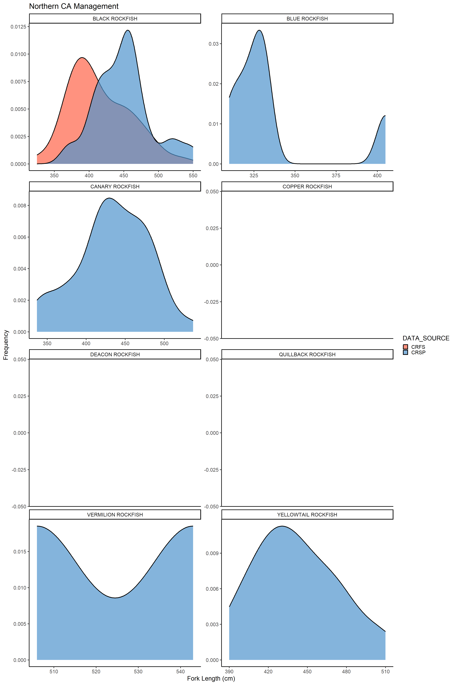
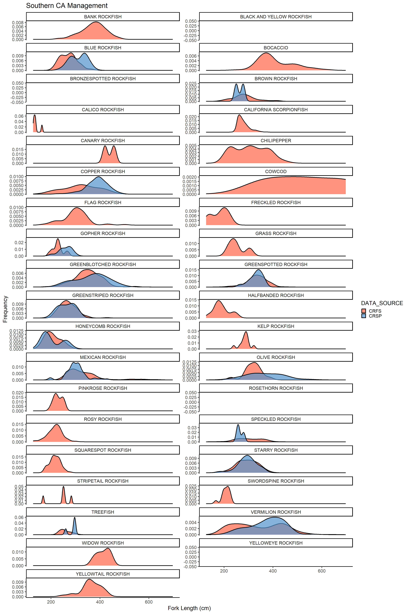

knitr::opts_chunk$set(warning = FALSE, message = FALSE, echo = TRUE)
library(tidyverse)
library(data.table)
library(ggplot2)
alpha = 0.5
theme_set(theme_classic(base_size = 20))California Recreational Fisheries Survey (CRFS) & Copperative Recreational Sampling Program (CRSP) Length Data Comparison
Description
The purpose of this document is to compare the length frequency distribution between the length data collected by the CDFW California Recreational Fisheries Survey (CRFS) & the Cooperative Recreational Sampling Program piloted by NOAA Fisheries and the Sportfishing Association of California (SAC).
Upload CRFS & CRSP length data
California Recreational Fisheries Survey (CRFS) Data:
CRFS data was retrieved from the Recreational Fisheries Information Network (https://www.recfin.org/).
Date Accessed: August 7th, 2023 (needs to be updated every time data is downloaded)
Date Range of CFRFS Data: 01/01/2023-05/01/2023 (needs to be updated every time data is downloaded)
Notes about CRFS Data: Data filtered to include only fish sampled in CA within 2023. Data filtered to include all all ports, all water areas, all fish areas, all trip types, all sources, both released and retained, groundfish, all complexes, rockfish, all species.
Cooperative Recreational Sampling Program (CRSP) Data:
CRSP data is currently being stored on Google Drive in Google Sheets: https://docs.google.com/spreadsheets/d/1gfTqfUz6_yY_UaC8doQJY6xqRCaN7I-5W0e9DHwJnmU/edit#gid=0
--------------------------------------------------------------------------------------------------------------------
Import, rename, and merge the CRFS and CRSP data tables into one single data frame (‘Full_Data’) for species-specific comparison within management districts.
#Import CRSP data and filter by CDFW management region
CRSP_Data <- read.csv("CRSP-Data-Accessed-20230808.csv")
CRSP_RecFIN_port_renaming <- c("Eureka" = "Northern", "Shelter Cove" = "Mendocino", "Fort Bragg" = "Mendocino", "Bodega Bay" = "San Francisco", "Emeryville" = "San Francisco", "Half Moon Bay" = "San Francisco", "Moss Landing" = "Central", "Morro Bay" = "Central", "Avila Beach" = "Central", "Santa Barbara" = "Southern", "Oxnard" = "Southern", "Dana Point" = "Southern", "San Diego" = "Southern")
CRSP_Data <- CRSP_Data %>%
mutate(RecFIN_Port_Name = CRSP_RecFIN_port_renaming[Port])
PacFIN_Codes <- read.csv("PAcFIN_Codes.csv")
PacFIN_Codes <- PacFIN_Codes %>%
rename(PacFIN_Species_Code = PACFIN_SPECIES_CODE)
CRSP_Data <- CRSP_Data %>%
merge(.,PacFIN_Codes,by = intersect('PacFIN_Species_Code','PacFIN_Species_Code'), all = F) %>%
select(c(PacFIN_Species_Code,RecFIN_Port_Name,Fork_Length_mm,SPECIES_NAME))
CRSP_Data <- CRSP_Data %>%
rename(RECFIN_PORT_NAME = RecFIN_Port_Name, LENGTH_MM = Fork_Length_mm)
CRSP_Data <- select(CRSP_Data,'RECFIN_PORT_NAME','SPECIES_NAME','LENGTH_MM')
CRSP_Data <- CRSP_Data %>%
mutate(DATA_SOURCE = rep("CRSP", n()))
#Import CRFS data and filter by CDFW management region
CRFS_Data <- read.csv("CRFS-Data-Accessed-20230807.csv")
CRFS_RecFIN_port_renaming <- c("REDWOOD (HUMBOLDT COUNTY, EXCEPT SHELTER COVER AREA, AND DEL NORTE COUNTY)" = "Northern", "WINE (MENDOCINO COUNTY AND SHELTER COVE AREA IN HUMBOLDT COUNTY)" = "Mendocino", "San Francisco" = "BAY AREA (SONOMA, MARIN, SOLANO, NAPA, CONTRA COSTA, ALAMEDA, SANTA CLARA, SAN MATEO, SAN FRANCISCO COUNTIES)", "CENTRAL (SAN LUIS OBISPO, MONTEREY AND SANTA CRUZ COUNTIES)" = "Central", "CHANNEL (VENTURA AND SANTA BARBARA COUNTIES)" = "Southern", "SOUTH (SAN DIEGO, ORANGE AND LOS ANGELES COUNTIES)" = "Southern")
CRFS_Data <- CRFS_Data %>%
rename(LENGTH_MM = RECFIN_LENGTH_MM)
CRFS_Data <- CRFS_Data %>%
mutate(RECFIN_PORT_NAME = CRFS_RecFIN_port_renaming[RECFIN_PORT_NAME])
CRFS_Data <- select(CRFS_Data,'RECFIN_PORT_NAME','SPECIES_NAME','LENGTH_MM')
CRFS_Data <- CRFS_Data %>%
mutate(DATA_SOURCE = rep("CRFS", n()))
#Merge the two data types into one master dataset
Full_Data <- rbind(CRFS_Data, CRSP_Data)
Full_Data <- Full_Data[,c(4,1,2,3)]
Full_Data$LENGTH_MM <- as.numeric(Full_Data$LENGTH_MM)Filter CRFS & CRSP length data by CDFW Management Area
CDFW Management Area Include:
- Northern - Ports between the OR/CA Border to Cape Mendocino Area
- Mendocino - Ports between the Cape Mendocino Area to Point Arena
- San Francisco - Ports between the Point Arena to Pigeon Point
- Central - Ports between the Pigeon Point to Point Conception
- Southern - Ports between the Point Conception to US/MX Border
Filter ‘Full_Data’ into separate dataframes for each CDFW management region. Create tables to view number of lengths from each data set (CRFS & CRSP) by species.
library(modelsummary)
library(tidyverse)
#NORTHERN
Northern <- Full_Data %>%
group_by(RECFIN_PORT_NAME) %>%
filter(RECFIN_PORT_NAME == "Northern")
datasummary_crosstab(SPECIES_NAME ~ DATA_SOURCE, statistic = ~ N, title = 'Northern Management Region', data = Northern)| SPECIES_NAME | CRFS | CRSP | |
|---|---|---|---|
| BLACK ROCKFISH | N | 41 | 50 |
| BLUE ROCKFISH | N | 0 | 6 |
| CANARY ROCKFISH | N | 1 | 47 |
| COPPER ROCKFISH | N | 0 | 1 |
| DEACON ROCKFISH | N | 0 | 1 |
| QUILLBACK ROCKFISH | N | 0 | 1 |
| VERMILION ROCKFISH | N | 0 | 2 |
| YELLOWTAIL ROCKFISH | N | 1 | 26 |
#MENDOCINO
Mendocino <- Full_Data %>%
group_by(RECFIN_PORT_NAME) %>%
filter(RECFIN_PORT_NAME == "Mendocino")
datasummary_crosstab(SPECIES_NAME ~ DATA_SOURCE, statistic = ~ N, title = 'Mendocino Management Region', data = Mendocino)| SPECIES_NAME | CRFS | CRSP | |
|---|---|---|---|
| BOCACCIO | N | 9 | 0 |
| CANARY ROCKFISH | N | 14 | 0 |
| CHILIPEPPER | N | 17 | 0 |
| GREENSPOTTED ROCKFISH | N | 2 | 0 |
| GREENSTRIPED ROCKFISH | N | 1 | 0 |
| VERMILION ROCKFISH | N | 11 | 25 |
| WIDOW ROCKFISH | N | 2 | 0 |
| YELLOWTAIL ROCKFISH | N | 16 | 25 |
#SAN FRANCISCO
San_Francisco <- Full_Data %>%
group_by(RECFIN_PORT_NAME) %>%
filter(RECFIN_PORT_NAME == "San Francisco")
datasummary_crosstab(SPECIES_NAME ~ DATA_SOURCE, statistic = ~ N, title = 'San Francisco Management Region', data = San_Francisco)| SPECIES_NAME | CRSP | |
|---|---|---|
| BROWN ROCKFISH | N | 37 |
| CANARY ROCKFISH | N | 28 |
| CHINA ROCKFISH | N | 1 |
| COPPER ROCKFISH | N | 2 |
| DEACON ROCKFISH | N | 1 |
| GREENSPOTTED ROCKFISH | N | 40 |
| SPECKLED ROCKFISH | N | 2 |
| STARRY ROCKFISH | N | 8 |
| VERMILION ROCKFISH | N | 3 |
| YELLOWTAIL ROCKFISH | N | 43 |
#CENTRAL
Central <- Full_Data %>%
group_by(RECFIN_PORT_NAME) %>%
filter(RECFIN_PORT_NAME == "Central")
datasummary_crosstab(SPECIES_NAME ~ DATA_SOURCE, statistic = ~ N, title = 'Central Management Region', data = Central)| SPECIES_NAME | CRFS | CRSP | |
|---|---|---|---|
| BLACK AND YELLOW ROCKFISH | N | 1 | 0 |
| BLUE ROCKFISH | N | 167 | 20 |
| BOCACCIO | N | 156 | 0 |
| BROWN ROCKFISH | N | 0 | 1 |
| CANARY ROCKFISH | N | 20 | 26 |
| CHILIPEPPER | N | 211 | 0 |
| CHINA ROCKFISH | N | 1 | 0 |
| COPPER ROCKFISH | N | 6 | 4 |
| COWCOD | N | 3 | 0 |
| FLAG ROCKFISH | N | 2 | 2 |
| GOPHER ROCKFISH | N | 12 | 12 |
| GREENSPOTTED ROCKFISH | N | 72 | 29 |
| GREENSTRIPED ROCKFISH | N | 15 | 4 |
| KELP ROCKFISH | N | 14 | 0 |
| OLIVE ROCKFISH | N | 3 | 7 |
| ROSY ROCKFISH | N | 13 | 4 |
| SPECKLED ROCKFISH | N | 2 | 0 |
| SQUARESPOT ROCKFISH | N | 1 | 0 |
| STARRY ROCKFISH | N | 43 | 14 |
| TREEFISH | N | 0 | 3 |
| VERMILION ROCKFISH | N | 190 | 21 |
| WIDOW ROCKFISH | N | 4 | 0 |
| YELLOWEYE ROCKFISH | N | 3 | 0 |
| YELLOWTAIL ROCKFISH | N | 37 | 27 |
#SOUTHERN
Southern <- Full_Data %>%
group_by(RECFIN_PORT_NAME) %>%
filter(RECFIN_PORT_NAME == "Southern")
datasummary_crosstab(SPECIES_NAME ~ DATA_SOURCE, statistic = ~ N, title = 'Southern Management Region', data = Southern)| SPECIES_NAME | CRFS | CRSP | |
|---|---|---|---|
| BANK ROCKFISH | N | 155 | 0 |
| BLACK AND YELLOW ROCKFISH | N | 1 | 0 |
| BLUE ROCKFISH | N | 69 | 38 |
| BOCACCIO | N | 550 | 0 |
| BRONZESPOTTED ROCKFISH | N | 1 | 0 |
| BROWN ROCKFISH | N | 46 | 2 |
| CALICO ROCKFISH | N | 5 | 0 |
| CALIFORNIA SCORPIONFISH | N | 1332 | 0 |
| CANARY ROCKFISH | N | 2 | 0 |
| CHILIPEPPER | N | 297 | 0 |
| COPPER ROCKFISH | N | 71 | 91 |
| COWCOD | N | 3 | 0 |
| FLAG ROCKFISH | N | 72 | 1 |
| FRECKLED ROCKFISH | N | 3 | 0 |
| GOPHER ROCKFISH | N | 12 | 27 |
| GRASS ROCKFISH | N | 4 | 0 |
| GREENBLOTCHED ROCKFISH | N | 200 | 10 |
| GREENSPOTTED ROCKFISH | N | 280 | 15 |
| GREENSTRIPED ROCKFISH | N | 154 | 8 |
| HALFBANDED ROCKFISH | N | 10 | 1 |
| HONEYCOMB ROCKFISH | N | 27 | 3 |
| KELP ROCKFISH | N | 11 | 0 |
| MEXICAN ROCKFISH | N | 392 | 54 |
| OLIVE ROCKFISH | N | 15 | 15 |
| PINKROSE ROCKFISH | N | 12 | 0 |
| ROSETHORN ROCKFISH | N | 1 | 0 |
| ROSY ROCKFISH | N | 74 | 1 |
| SPECKLED ROCKFISH | N | 85 | 3 |
| SQUARESPOT ROCKFISH | N | 63 | 0 |
| STARRY ROCKFISH | N | 202 | 31 |
| STRIPETAIL ROCKFISH | N | 5 | 0 |
| SWORDSPINE ROCKFISH | N | 12 | 1 |
| TREEFISH | N | 21 | 5 |
| VERMILION ROCKFISH | N | 608 | 84 |
| WIDOW ROCKFISH | N | 10 | 0 |
| YELLOWEYE ROCKFISH | N | 1 | 0 |
| YELLOWTAIL ROCKFISH | N | 30 | 0 |
Length Distribution Plots Comparing CRFS & CRSP Data
Species-specific density distribution plots comparing species-specific CRFS & CRPS surveyed lengths. Species plots where no distribution occurs only had one specimen sampled from either CRFS or CRSP.
#NORTHERN
Northern_length_plot <- ggplot(Northern, aes(x = LENGTH_MM, fill = DATA_SOURCE))+
geom_density(lwd = 1.2, linetype = 1, alpha = 0.7)+
scale_fill_manual(values = c("tomato","steelblue3"))+
facet_wrap(~SPECIES_NAME , ncol = 2, scales = "free")+
labs(x = "Fork Length (cm)", y = "Frequency", title = "Northern CA Management")
print(Northern_length_plot)
#MENDOCINO
Mendocino_length_plot <- ggplot(Mendocino, aes(x = LENGTH_MM, fill = DATA_SOURCE))+
geom_density(lwd = 1.2, linetype = 1, alpha = 0.7) +
scale_fill_manual(values = c("tomato","steelblue3"))+
facet_wrap(~ SPECIES_NAME , ncol = 2, scales = "free_y") +
labs(x = "Fork Length (cm)", y = "Frequency", title = "Mendocino CA Management")
print(Mendocino_length_plot)#SAN FRANCISCO
San_Francisco_length_plot <- ggplot(San_Francisco, aes(x = LENGTH_MM, fill = DATA_SOURCE))+
geom_density(lwd = 1.2, linetype = 1, alpha = 0.7) +
scale_fill_manual(values = c("tomato","steelblue3"))+
facet_wrap(~ SPECIES_NAME , ncol = 2, scales = "free_y") +
labs(x = "Fork Length (cm)", y = "Frequency", title = "San Francisco CA Management")
print(San_Francisco_length_plot)#CENTRAL
Central_length_plot <- ggplot(Central, aes(x = LENGTH_MM, fill = DATA_SOURCE))+
geom_density(lwd = 1.2, linetype = 1, alpha = 0.7) +
scale_fill_manual(values = c("tomato","steelblue3"))+
facet_wrap(~ SPECIES_NAME , ncol = 2, scales = "free_y") +
labs(x = "Fork Length (cm)", y = "Frequency", title = "Central CA Management")
print(Central_length_plot)#SOUTHERN
Southern_length_plot <- ggplot(Southern, aes(x = LENGTH_MM, fill = DATA_SOURCE))+
geom_density(lwd = 1.2, linetype = 1, alpha = 0.7) +
scale_fill_manual(values = c("tomato","steelblue3"))+
facet_wrap(~ SPECIES_NAME , ncol = 2, scales = "free_y") +
labs(x = "Fork Length (cm)", y = "Frequency", title = "Southern CA Management")
print(Southern_length_plot)